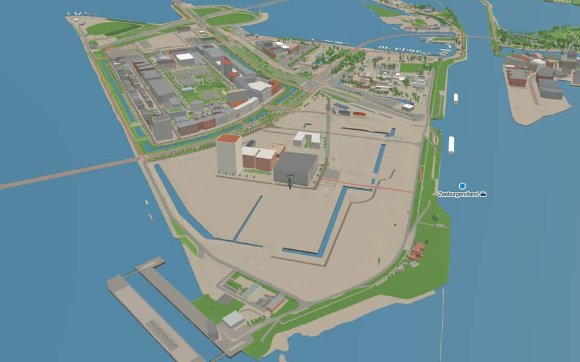
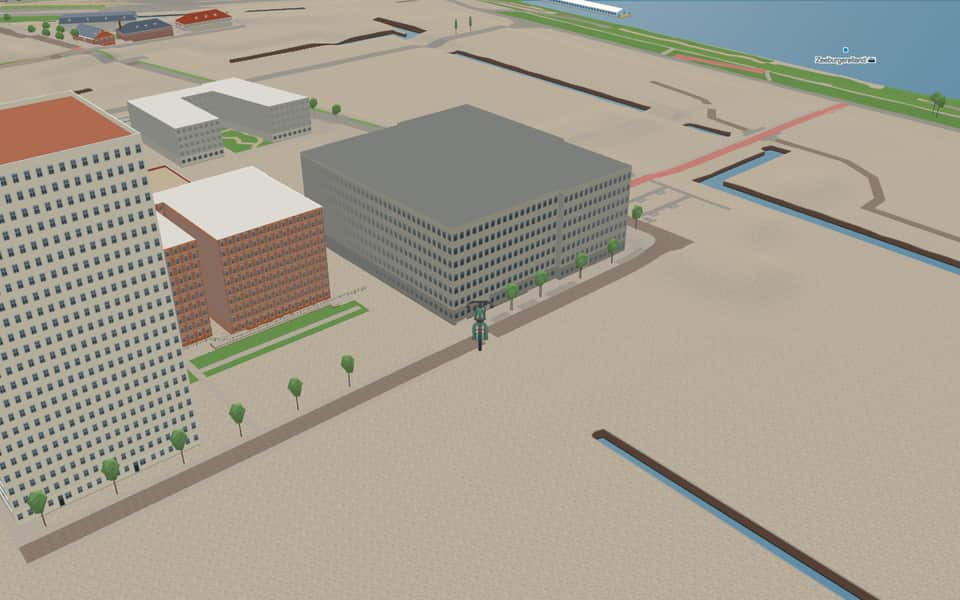

Neighbourhood · Amsterdam
Sluisbuurt
The Sluisbuurt is a district, partly still under construction, on Zeeburgereiland in Amsterdam-Oost. The district lies by the Oranjesluizen, after which it is named, and the Binnen-IJ, and covers the area between the Zuiderzeeweg and the Schellingwouderbrug and the IJburglaan towards the Piet Heintunnel. Wikipedia
Ride Sluisbuurt4 facts · 10 name stories


In the game
Frames from a ride through Sluisbuurt.


3 more photos of Sluisbuurt


Built here
Buildings modelled one by one for the ride.
Nothing here is individually modelled yet: the ride draws Sluisbuurt from the city's 3D building register (3DBAG), with real heights and roofs.
Did you know
Trivia the ride can show you here.
- About 5,500 homes are planned here in a setting unusual for Amsterdam: housing blocks with tall residential towers between them. Wikipedia
- Since early 2023 a temporary ferry has linked the Sluisbuurt with the Tegelbergplein on Sporenburg. Wikipedia
- ZuiderzeewegA former East Sewage Treatment Plant once stood on Zeeburgereiland before relocating. nl.wikipedia.org
- ZuiderzeewegPedestrian staircases lead down from the Amsterdam Bridge to Camping Zeeburg. nl.wikipedia.org
Names on the map
Where the canal, bridge and street names come from.
Streets
- Anna PavlovastraatAnna Pavlova was a Russian ballet dancer, choreographer, producer and teacher. She became famous for her performance of The Dying Swan.
- George BalanchinestraatGeorge Balanchine was an American choreographer of Georgian descent, regarded as one of the most important choreographers of twentieth-century classical ballet.
- Marianne HilaridesplantsoenMarianne Hilarides was a Dutch ballet dancer. A pupil of Sonia Gaskell, she made her debut in 1950 with the Ballet Recital, where she was given solo roles, among them the pas de deux of Le Cygne Noir (the Black Swan).
- Olga de HaasstraatOlga de Haas was a Dutch ballet dancer.
- Pina BauschpleinPina Bausch was a German dancer and choreographer, one of the founders of neo-expressionist modern dance (Tanztheater).
- Rudi van DantzigstraatRudi van Dantzig was a Dutch choreographer, ballet dancer and writer, for twenty years artistic director of the Dutch National Ballet.
- Rudolf NurejevstraatRudolf Nureyev was a Russian-Austrian ballet dancer and choreographer.
- Serge LifarsteegSerge Lifar was a Russian-French dancer, choreographer, ballet director and author.
- Zuider IJdijkThe south side of the IJ.
- ZuiderzeewegThe Zuiderzee, called the IJsselmeer after it was closed off in 1932.